2021
18th of October, 2021
- Poland is abolished.
- Operation Third Wave is being discussed.
9th of October, 2021
- Ido Front is raided by a few Members of the Poland Faction, leaving it severely damaged
8th of October, 2021
- The Poland Faction is founded, Members include john_koop, Rimei_, the_tru_god, Giorno2, Pompel_or_smth, iXARES and Completo_101 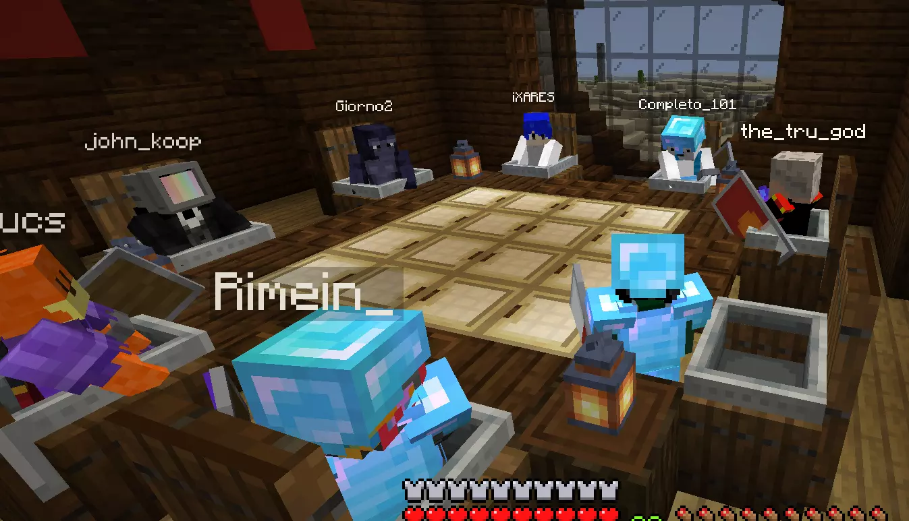
- Ido Front is attacked by the Poland Faction
5th of September, 2021
- ATS turns 1! Happy Birthday! 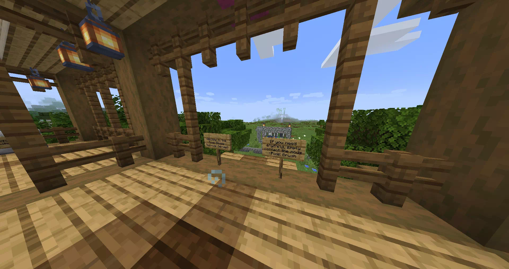
4th of September, 2021
- john_koop, Pompel_or_smth and Creeper_Jonny finish the great eastern railway, it expends out to 2000 blocks away from spawn, making it the longest railway on the Server upon it's completion
30th of August, 2021
- john_koop finishes the Grand Birmingham train station
- PixelBrushArt finishes his small shop/inn 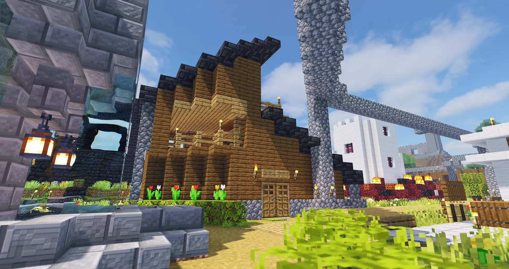
29th of August, 2021
- Creeper_Jonny finishes "The Blade", a Tribute to Technoblade
")
19th of August, 2021
- john_koop proposes the idea of a racetrack near Birmingham to bet on horses
14th of August, 2021
- The war ends, Creeper_Jonny is declared as the winner!
12th of August, 2021
- War is declared between Creeper_Jonny and Dark_Lord_Stefan, planned for the 14th of August
7th of July, 2021
- Move to 1.17.1
- Discontinuation of Minecraft Bedrock support (sorry!)
- Operation "Second wave" begins
- Creeper_Jonny gets the first Copper
- PixelBrushArt is the first to capture an Axolotl
- PixelBrushArt and ItsSevvy are the first to obtain Amethyst Shards, alongside the Spyglass
27th of June, 2021
- The Inn gets completed by Phroni_Tierkin and PixelBrushArt
- A small Experience Farm is constructed by PixelBrushArt
20th of June, 2021
- The Inn begins construction
19th of June, 2021
- The Placement of New London is discussed
7th of June, 2021
- ItsSevvy begins constructing her city 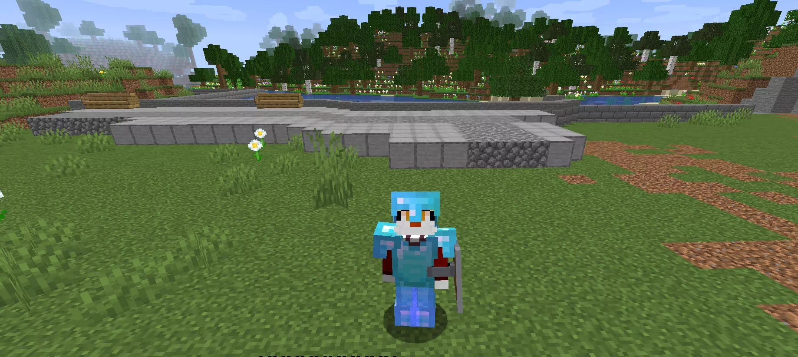
6th of June, 2021
- The construction of an Inn is mentioned by PixelBrushArt, due to the beds at spawn being unusable
5th of June, 2021
- PixelBrushArt reaches the Farlands using a horse, becoming the second person to acquire an Elytra this way 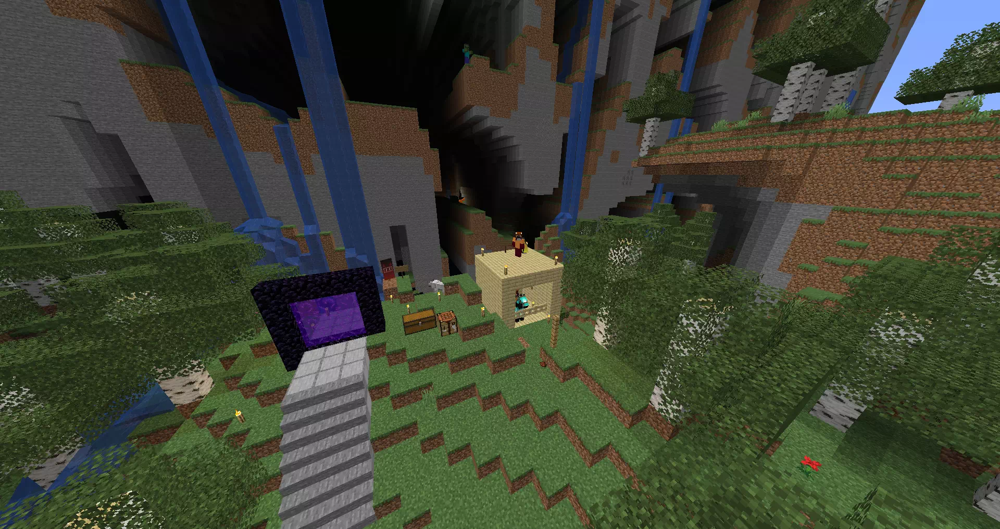
27th of May, 2021
- Teo1717 announces the completion of the "Jubilee Line", a tube network meant to connect spawn more 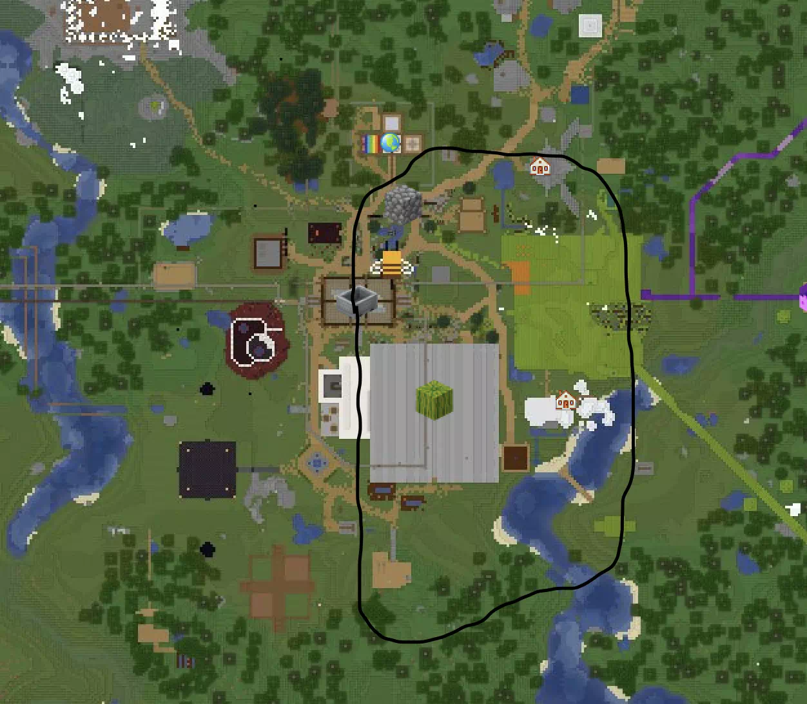
26th of May, 2021
- ATS gets it's own Discord Server
25th of May, 2021
- Ido Front is completed (Link to Video)
20th of May, 2021
- The Train Station is completed 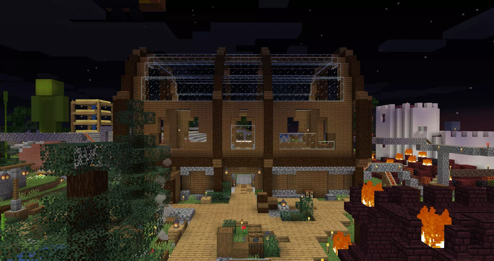 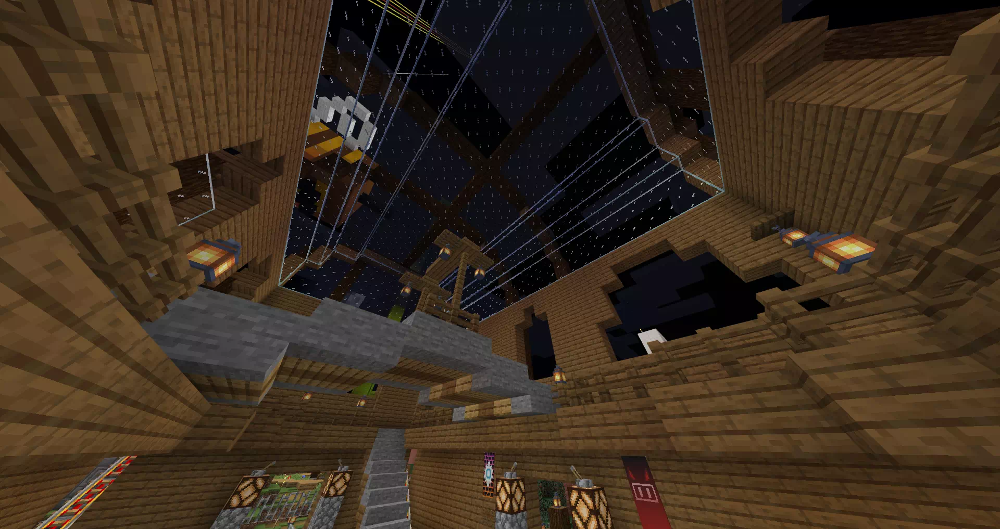
19th of May, 2021
- Outer wall of Ido Front is finished
- Work on the Train station continues
- The Atantide Alliance (Creeper_Jonny, Teo1717) wins the war against the Ottoman Empire (BallisticBedrock)
- The Ottoman Empire falls
17th of May, 2021
- The Atantide Alliance (Creeper_Jonny, Teo1717) declares war against the Ottoman Empire (BallisticBedrock)
12th of May, 2021
- Ido Front Railway is completed by Teo1717
- Beautification of Spawn is started by Teo1717
10th of May, 2021
- Creeper_Jonny reaches the Farlands and becomes the first owner of Elytras on the entire Server 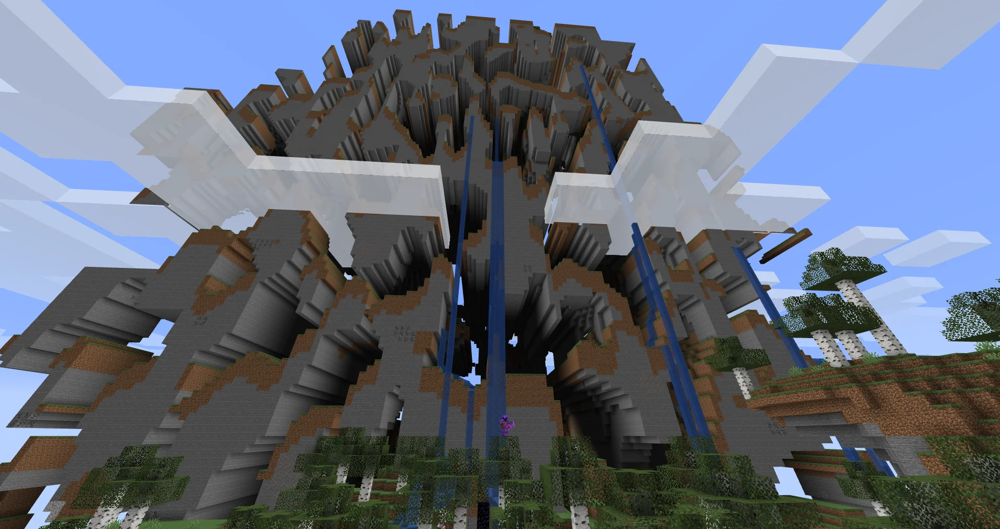
- The Spawn Bee is constructed 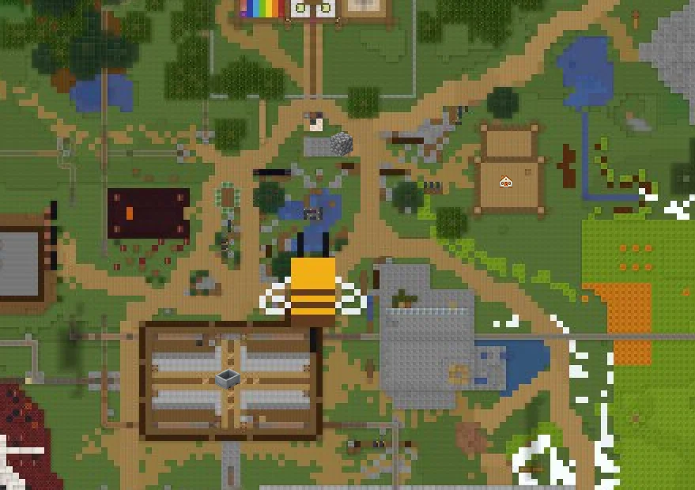
8th of May, 2021
- Creeper_Jonny starts heading towards the Farlands using a Horse
7th of May, 2021
- weaselcheez starts heading towards the Farlands using a flying Machine 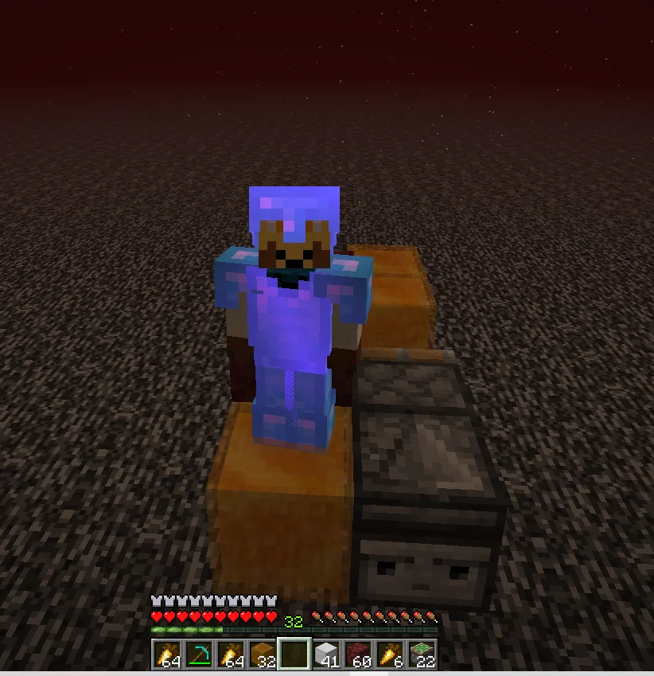
5th of April, 2021
- Easter Event happens
4th of April, 2021
- The Great Arch begins to be planned
21st of March, 2021
- Server Image gets updated 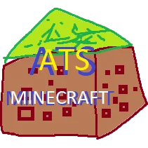
20th of March, 2021
- Dynmap Icon Overhaul
12th of March, 2021
- Tesco is constructed 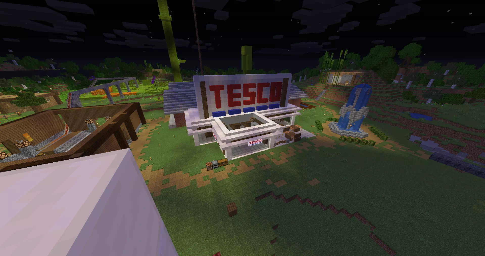
10th of March, 2021
- Belated half year anniversary of the Server, new Icon event is announced by PixelBrushArt
8th of March, 2021
- Attempt to connect Ido Front and the Coalition headquarters with Morse Redstone Lines, gets replaced with Railway 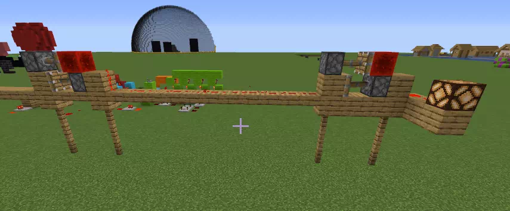
7th of March, 2021
- The DynMap gets it's own place on the Website, broken
3rd of March, 2021
- The Squiddy Empire (TheSquiddyLink) gets recongized by the Coalition of the Sun
1st of March, 2021
- Removal of the Giant Squib Heads near Spawn, marker remains on map as "Former Giant Squibs Head" 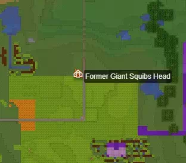
- First Flying Machine starts and crashes, Mount Statoris is discovered 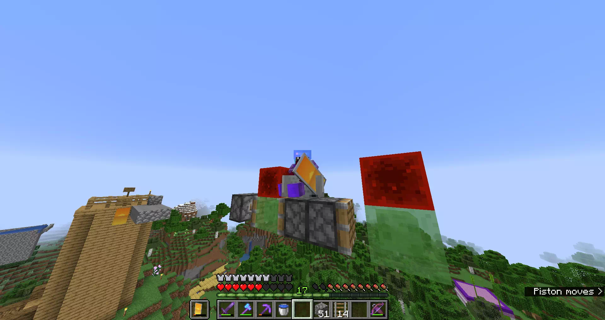 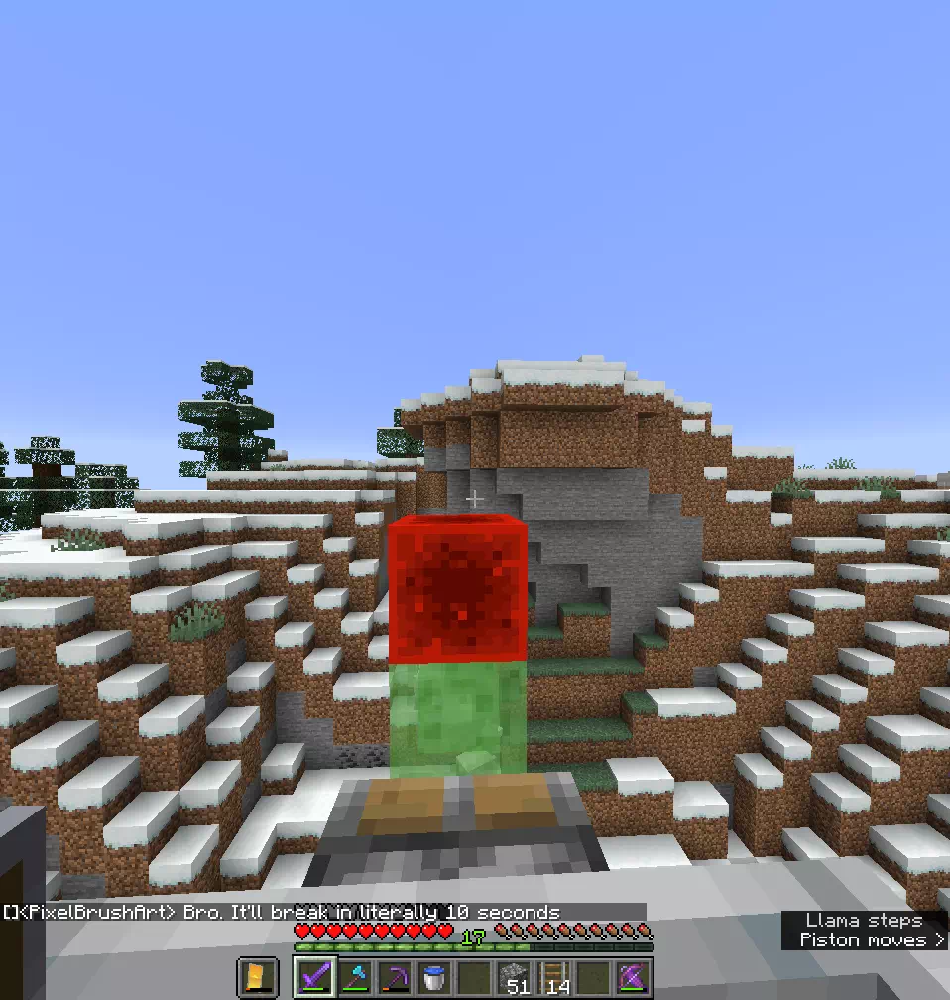
28th of February, 2021
- Wither Event happens, weaselcheez declares it a failure
25th of February, 2021
- First railroad routes are functional 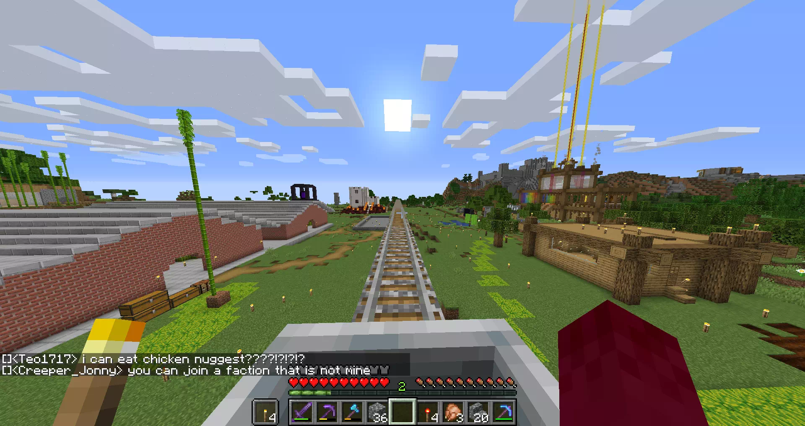
- Ido front starts construction
24th of February, 2021
- Construction of the Trainstation begins
- Creation of the Netherite Sythe
- Construction of the first Village in the Coalition of the Sun 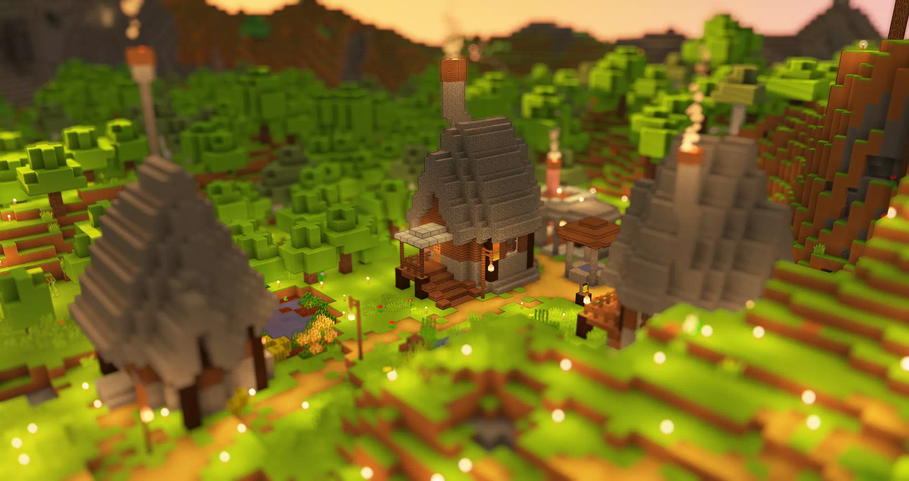
21st of February, 2021
- Eye of the Diamond (FirewallFighter, ShotgunnerFox)is renamed to "Firefoxian Union" (FirewallFighter)
- Eye of the Diamond (FirewallFighter, ShotgunnerFox) is established.
20th of February, 2021
- Coalition of the Sun (PixelBrushArt), Atantide Alliance (Creeper_Jonny, Teo1717) and Lunar Province (weaselcheez) are established
")
11th of February, 2021
- Move to 1.16.5
7th of February, 2021
- First Mobile Player joins (*Gab_Just_Gab118) 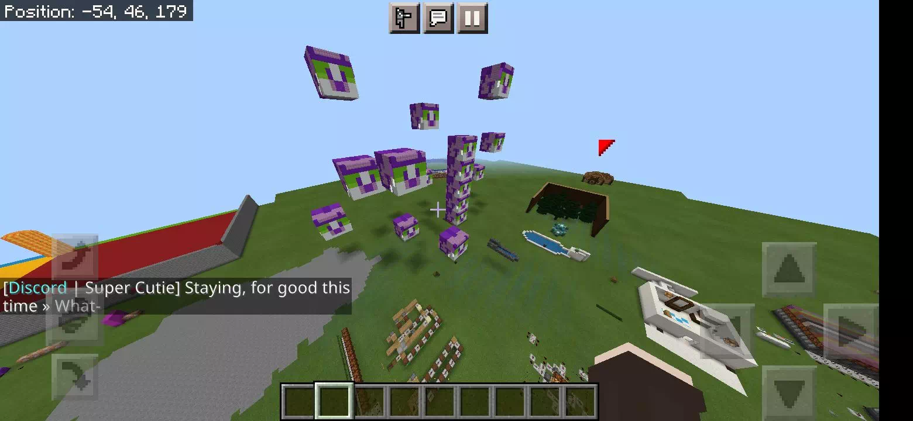
23rd of Janurary, 2021
- "Green Sky Attack" over Chunk Error Village is caused by Creeper_Jonny
2nd of Janurary, 2021
- First non-Hamachi Player joins (Creeper_Jonny)
2020
29th of November, 2020
- Move to 1.16.4
1st of November, 2020
- First proper event, Halloween 2020
26th of October, 2020
- Move to 1.16.3
- First Bedrock Player joins (ginkaandryuga)
")
11th of September, 2020
- First Screenshot of the Creative world 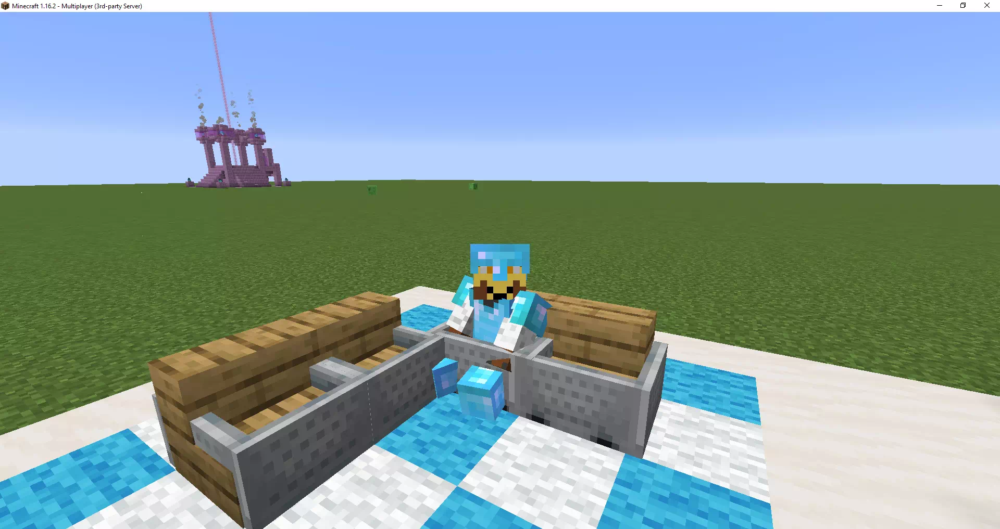
8th of September, 2020
- Major Server Crash, Creation of Chunk Error Village 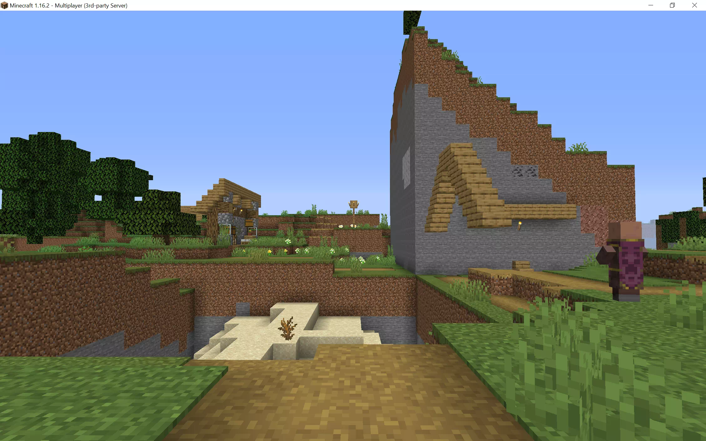
5th of September, 2020
- Server starts for the first time (Version 1.16.2) 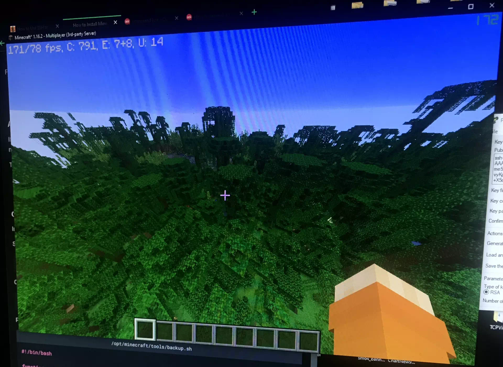